What Imhof teaches, in pixels
The Imhof student, writing the day after. The study took one afternoon on 26 September 2026: 2 hours 6 minutes of wall clock, 443 steps, 147 images looked at. Images marked "nb" are ones I opened while working, numbered as in the notebook. Several were overwritten on disk later, so the notebook is the only place they survive. Images marked "fig" are the study's final sheets, or crops cut from its final arrays for this page. The code is in ~/work/pixelart-studies/books/imhof/code/ and copies/. The book's model in its own terms, with page numbers, is MODEL.md in that folder. What I'd teach from all this is in the tutorial.
The brief was one book: Eduard Imhof, Cartographic Relief Presentation (1965; English edition 1982). It's the Swiss system for showing terrain by an imagined light and drawing rock by its structure. The subject was voxsim's rock and mountains at landscape and region zoom: the Enchantments granite, the Yakima Canyon basalt and the Skykomish walls, with real 1 m lidar for all of them. The brief asked for four things: read the whole book as an apprentice, master-copy its plates at our scales, find the pixel method that carries each truth, and test it on the real places.
Here is the short version. The book's model of light carried into pixels nearly whole, and a critic judged my region-scale plans better than the lanes' current renders for the Enchantments and Mount Index. The book's model of rock drawing I understood, copied partly, and did not yet carry: my rock on real lidar is still more hatch texture than drawing. I stood at the fork every book student here stood at, copy the master's plates or build a system that applies his rules, with a system half-written. I stopped and copied before I ran it on any terrain, and everything I learned about rock came from the copies. It still wasn't enough to make the system draw rock.
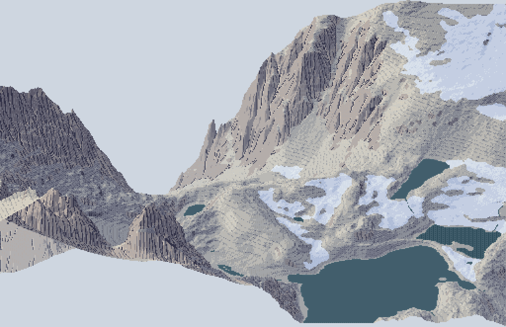
fig. The Enchantments at Aasgard Pass: the 2 m/px plan painted by the final method, draped on the 1 m lidar and seen from the south at 30°, at 2×. Dragontail's NE face is on the left, the Colchuck glacier's snow is on the right, and Isolation Lake is at the front.
1. The book arrived broken
The PDF is a Digital Library of India scan: 405 pages, and every page is a 1-bit bilevel image at 300 dpi. pdfimages -list told me that before I'd looked at a single page:
page num type width height color comp bpc enc
1 0 image 1853 3163 gray 1 1 ccitt
...
405 gray 1 ccitt # every page: 1 bit
For a book about tone, that's close to the worst possible damage. Line work survives a threshold. Halftones don't. Every shading figure, every model photograph and every aerial photograph is now black blotches on white, and the colour plates aren't in the scan at all. The best picture of the problem is his own Figs 24 and 25, a photograph of the Mürtschenstock beside his pen drawing of the same view:

nb007. p.46-47. Left: the photograph, thresholded into blotches. Right: Imhof's 1964 pen drawing of the same view, perfect. The drawing survived and the thing it was drawn from didn't. That is also the chapter's argument: "a good sketch is simpler, more expressive" than a photograph.
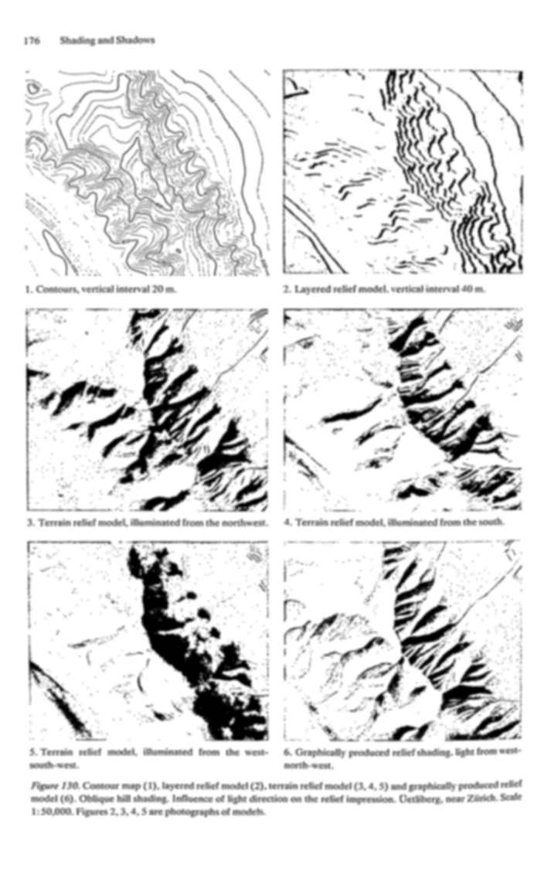
nb048. p.176, Fig.130: the Uetliberg under three model lights, and Imhof's drawn shading (6). I blurred the page to get some tone back out of the dither. It still shows the lesson (one light makes some ridges bold and others vanish; the drawing unifies them), but none of his half-tones can be seen.
I did three things about the damage:
- OCR'd every page. The library's text file for the book was 405 bytes.
pdfimages -pngextracted the pages (57 MB), andtesseractran three at a time undernice. The first parallel pass quit at page 230. My script listed the PNGs that existed when it started, whilepdfimageswas still writing them, so it finished early and printed PASSDONE. I noticed because the chapter 10 text came back empty, and a second pass filled the rest. The full text is now in the library for the next student. - Read the text as the instrument. Imhof writes exact procedure (lettered rules a-l, page after page of "poor" and "good" figure by figure), so the lost plates are often described precisely enough to reconstruct.
- Used swisstopo as the living plates. Imhof designed the Swiss school atlas and led the style of the national maps. The Federal Office's tile service is public, so
swissfetch.pyfetches any of its maps for a bounding box (the 1:25,000, the 1:50,000, the Dufour map of 1842-64, the 1:500,000 relief), anddem.pyfetches the 2 m swissALTI3D elevation model under the same ground.
def fetch(layer, lvl, E0, N0, E1, N1, out, ext='jpeg', cache='refs/swiss/tiles'):
r = RES[lvl]; T = 256 * r # metres per pixel, metres per tile
x0, x1 = int((E0 - 2420000) // T), int((E1 - 2420000) // T)
y0, y1 = int((1350000 - N1) // T), int((1350000 - N0) // T)
...
url = f'https://wmts.geo.admin.ch/1.0.0/{layer}/default/current/2056/{lvl}/{tx}/{ty}.{ext}'
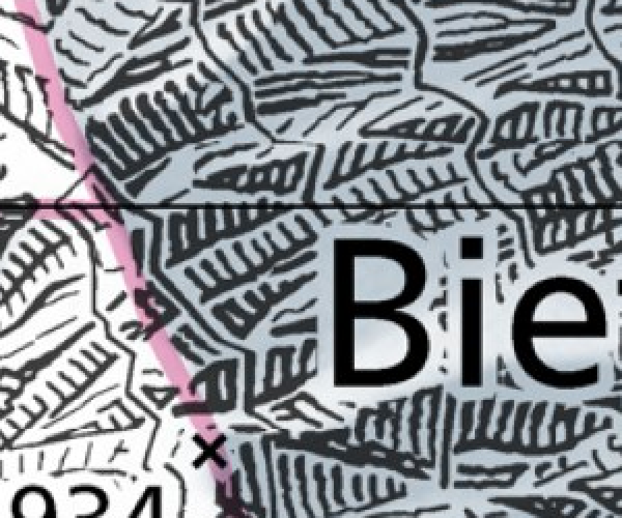
nb088. swisstopo 1:25,000, Bietschhorn granite, scanned at 1 m/px, 3×. This is what Swiss rock drawing looks like at our region scale: strokes down the fall line gathered into feathered gullies, in rows, on a light ground. It became the reference I compared my rock with at 1 m/px.
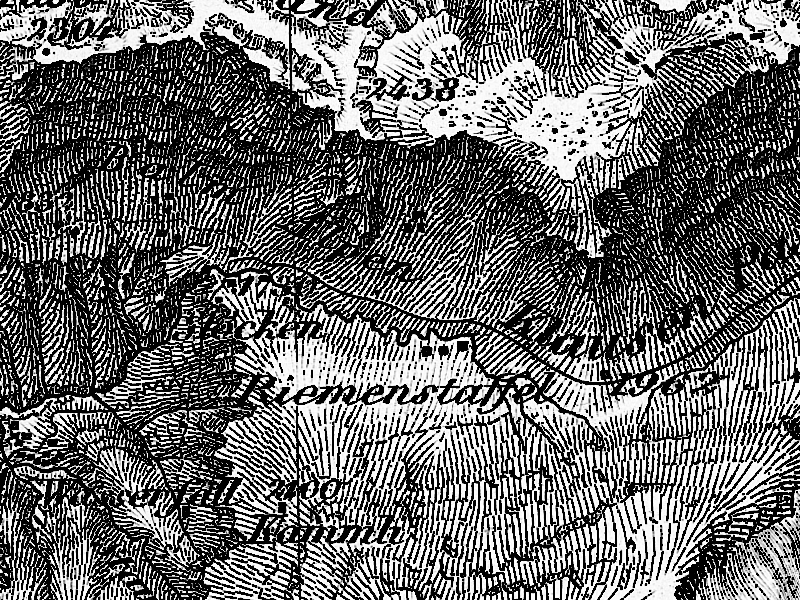
nb117. The Dufour map near the Klausen pass: shadow hachures, heavy on the slopes turned from the NW light and fine on the lit ones. Imhof called it "the finest and clearest map of any high mountain region" of its century.
2. Reading, and the model
Before the book I read the art school: the elk and deer POST, the aerial student's POST and the master-copy POST in full, part of the observation tutorial, and all of the rock study's LESSONS. The rock student had already read Imhof's chapter 11 and applied "skeleton first" to Dragontail over three rounds. So my job wasn't another terrain renderer. It was the whole book, and the parts the rock study hadn't carried.
Then I read the book in order. I looked at every figure page through a two-page spread tool (spread.py) and wrote notes chapter by chapter into NOTEBOOK.md, which ran to 7,600 words. MODEL.md is the distilled version, in Imhof's own vocabulary. What I took, in the order it became useful:
- Ch.5, the problem. Oblique light is "by far the best and often the only indicator of form" in plan view (p.79). His Fig.33 draws one cone in a ring groove eight ways and shows that only oblique shading needs no key.
- Ch.8, contours. The density of lines is the form signal: never normalize it (p.123). The eight rules of generalization (p.132).
- Ch.9, shading, the core. A 12-step procedure (p.169-170). Flat ground gets a medium grey. Light comes from the WNW, is diffuse, and is bent locally by up to 30° so that no important slope is "expressionless". The form depends on the transitions: crisp on sharp ridges, soft on rounded ones, and never "dark bands drawn lovingly along the shaded sides of ridges". Large forms first: lighten the local shadows on the lit side of a watershed and darken the shaded side (p.187). Aerial perspective by elevation, because in plan high = near. Leonardo: "between light and dark there exists a hybrid area ... This you must seek" (p.185). And, for any student with a computer, his verdict on Wiechel's 1878 formula
H = cos εwith a fixed NW light. That formula is exactly today's GIS hillshade, and he calls it "quite meaningless": "three-dimensional effects do not result from the degree of local shading but rather from the interplay of tones" (p.178). - Ch.10, hachures. Lehmann's five rules: strokes down the fall line, in rows between assumed contours, tone by stroke thickness at a constant pitch.

nb052. p.218-219: Lehmann's hachure scale, black:white = a : 45°−a, and the Austrian and Müffling variants. A pixel stroke has one or two weights, not nine. I didn't know yet how much that would matter.
- Ch.11, rock drawing, the other core. Rock betrays its structure (Figs 159-175: granite, gneiss, horizontal beds and the rest, all in pen). Form analysis comes before drawing: demarcation lines, then gully lines, then crest lines, and only then the internal structure. And Fig.178, seventeen small panels of good and poor rock hachuring with a paragraph of verdict each.

nb059. p.239-241: granite (161), gneiss (162), crystalline strata (163), inclined beds (166), vertical slabs (167). Every drawing is only a few kinds of stroke, and each kind follows the rock.

nb069. p.260-261: Fig.178. Column a is good and b is poor. "The form lies in the transition." "Ridge crests are not drawn in." "Each gully ... a crisp illuminated side paralleled by a well defined shadow." "Cloth weaving, but not of rock." This single page is most of what I'd need later, and I read it too fast the first time.
- Ch.13-14, colour and interplay. Shading tones "not dull, mouse-grey ... nor stylized red-violet, but rather a hazy blue-grey", more intense and redder toward the summits and bluer toward the valleys. A weak pink on the rock. Yellow for the light. "Shading tones should dominate the surface tones ... This is very important" (p.340). Walensee 1938, his 2 × 4.8 m gouache "landscape painting in plan view", is our genre, and he says so himself: "But the end result is not a map."
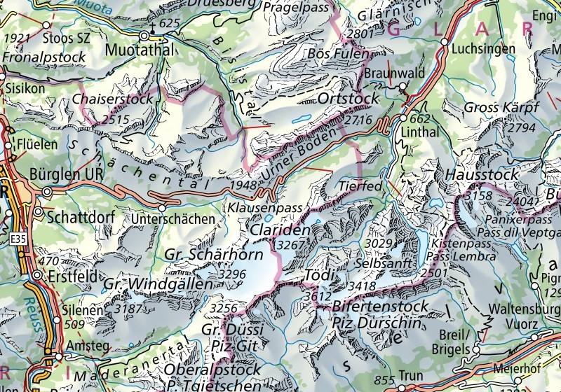
nb118. swisstopo 1:500,000 over Glarus and Uri: Imhof's colour recipe in print today. Yellow light, blue-grey shadow, the valleys veiled, rock drawn in skeleton over the shading.
3. The fork, and which way I went
The obvious next move was a system. By the end of the reading I had written three modules and run none of them: imhof.py (chapter 9 as a function), strokes.py (a first hachure tracer), and an exercise that would draw Fig.33 eight ways. Then I read the rock study's LESSONS as far as its rounds 3 and 4. The rock student had read Imhof's chapter 11 before me and applied its rules as a system on the Dragontail lidar (skeleton first, gully strokes with lit sides, aerial perspective), and the critic's verdict there was still "stipple instead of long diagonal gullies" and "fur or wood grain, not granite". Rules applied by a program had already been tried by a better-prepared student, and they hadn't made rock drawing.
So before running anything on real terrain I stopped and did what Imhof tells his own students to do (p.273): "good drawings of rock landscapes should also be copied ... good cartographic representations of rock masses can be copied at successively smaller scales. Only then should one try an independent piece of work." I copied his plates by hand at pixel size first, and ran the system afterwards.
4. Copying the plates by hand
I thought I understood chapter 11. I didn't: I'd read Fig.178 as captions.
The tool was a pixel grid laid over the plate (grid.py): the plate is scaled so that one target pixel is 8-11 screen pixels, with a red line every 5. I measured the plates too (measure_ink.py):
== 178_12 ink share 0.258 stroke direction mostly 75-105 deg
horizontal ink run: median 5 gap median 8 -> pitch 13.0 src px = 2.18 target px
== 178_15 ink share 0.198 pitch 20 src px = 3.36 target px (form lines)

nb090. Fig.178-12 box-reduced to 60, 84 and 110 px wide. At 60 the strokes merge into tone, and at 84-110 they survive. That set my copy size (112×96) and, later, the pitch for real rock: 3 px at the finest, 4 to be safe.

nb094. The plate under the grid at 112 px. You can place a gully by coordinates now, and the scale-like buttresses can be counted.
Fig.178-12, steep scale-like buttresses. My first copy put hand-drawn spines down each gully, with barbs off them up the slope:

nb095. Copy 1: combs. Rigid, regular, and the spines read as outlines, which is precisely what 178-12 is there to forbid.
The second copy followed Imhof's own order. Place only the gully lines by hand, let them imply a surface (a steep wall cut by a V along each gully), shade that surface, and let the streamline engine lay strokes down its fall line, weighted by its light:
z = -1.2 * yy + 0.22 * xx # the wall falls down and a little to the left
for g in GULLIES: # hand-placed from the gridded plate
d = dist_to_poly(xx, yy, g)
z -= GD * np.clip(1 - d / GW, 0, None) ** 1.3 # a V-cut, slightly concave
tone = I.imhof_tone(z, 1.0, az=315, el=40, local_dev=0, big_w=0, ap_low=1.0, diffuse=0.15)['t']
lines = HA.streamlines(z, sep=2.9, test=0.6, min_len=2.5, max_len=40, smooth=0.8, rng=rng)
for L in lines:
for i, (r, c) in enumerate(L):
t = tn[int(r), int(c)]
if t > 0.16: continue # lit wall: left open (the scraper)
C.px(c, r, 2)
if t < -0.18: C.px(c + 1, r, 3) # shaded wall: the stroke thickens

nb096. First run: ink share 0.59 against the plate's 0.29. The mechanism was right (strokes end against each other where they converge, and no crest is drawn) but everything was inked.
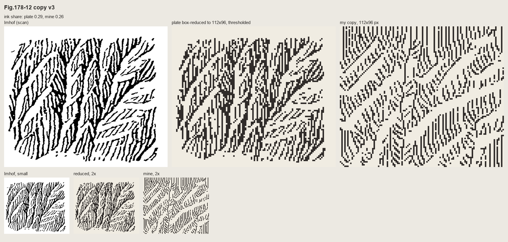
nb097, and then a sweep of gully depth and width (nb099). The dashes were broken to the plate's median stroke of 5 px, and the lit walls left open below a tone threshold.
Fig.178-15, a slab wall channelled by gullies. Here the form lines are horizontal, and they're simply contours of the implied surface, broken into dashes at the plate's pitch of about 4 px. Each gully is a shadow line with the pixel on its light side scraped clean.

nb101. v1: the form lines cross the gullies dead straight, and it reads as ruled paper with some lines drawn on it.

nb102. v2: the wall tilted so the lines rise to the right, as in the plate, the gullies cut deeper so the contours kink down into each one, and noise added so the lines wobble. The chevrons came free from the geometry.
Fig.161, granite. A pen drawing of a whole range isn't a stroke texture, so I tried to copy it stroke for stroke. I skeletonized the plate into polylines (vectorize.py) and redrew them as clean 1-px lines:

nb107. Top: the plate and its photographic reduction to 200 px. Middle: every stroke redrawn at 1 px, and only strokes of 4 px or more. Bottom: the pen's own stroke density read as three tones. The line-for-line copies are exactly Imhof's Fig.192 failure: photographic reduction of a fine drawing is "a tangle". The density version is the first thing that looked like mountains.
So I translated through values. I placed the silhouette, the foot and the shaded right flanks of each tower by hand as polygons off the grid (nb108). I kept only his long flutes, a step darker on lit faces and a crevice step in shade, each crevice with a lit pixel on its light side:


nb109, nb110. Before and after three rules from the book: contrast falls toward the foot of the wall (aerial perspective, p.263); the foot is garlanded where snow and scree tongues reach up the gullies (p.247); lit needle edges get the lightest step against the sky ("tiny shadows and light areas cut across the edge of the ridge", p.262).
Fig.165, horizontally bedded rock, which is the Yakima case, and the copy that went worst. It took five rounds:

nb106. The plate: cap blocks, a soft bench with "trees" of gullies, a lower cliff, debris aprons, and a receding plateau on the right.


nb112-114. Round 1: a band chart with barcode joints. Round 2: his strokes transferred one-to-one, each classified by zone. That's pen graffiti on a fill. Round 3: a tidier band chart.
Then I zoomed the plate to 11 screen pixels per target pixel (nb115) and saw what I hadn't: the lower wall is a row of rounded pillars with tombstone tops bulging up into the bench, and the "trees" are gullies whose dark trunks branch upward into the bench's debris. Round 4 was built from those parts:
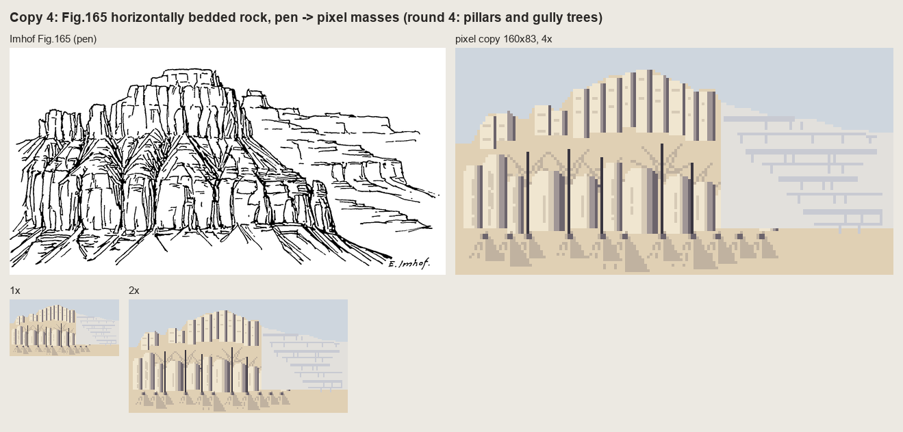
nb116. Round 4. It reads as the plate's layout. It doesn't read as bedded rock.
A small tool snag here: I tried to rewrite the round-3 file after my own scripted replacements had changed it, and the editor refused ("modified since read"). I kept that version as c165_paint_r2.py and wrote round 4 as a new file, which is why round 2 still survives. Another one, while sweeping gully depth for 178-12: for a in "3 4" "4 5" passes one argument in zsh, not two, so three runs died on float('3 4'). zsh doesn't word-split unquoted variables.
5. Fig.33 in pixels, and the stroke engine the copies needed
Chapter 5's Fig.33 is a halftone, so it's lost, but the text describes each panel. I rebuilt it at 96×96 px. The cone and the groove are one line of numpy:
z = np.clip(30 * (1 - r / 26), 0, None) - 8 * np.exp(-((r - 37) / 5.0) ** 2)
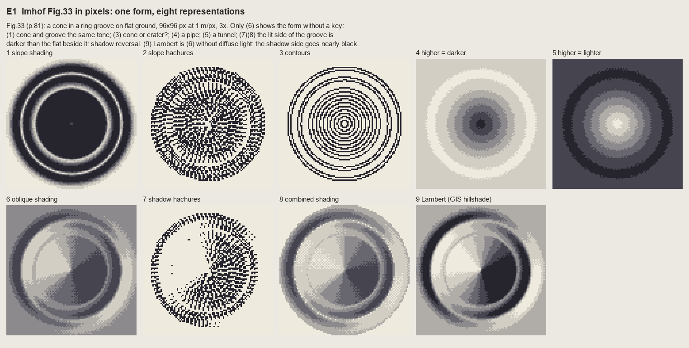
nb119. The first run of the exercise I'd written before copying. The slope hachures (panel 2) came from my first stroke code, which traced each hachure down from a contour to the next one. It's a dense mesh: the rows collide at the cone's tip, and there's no evenness.
By then I had something better, written for copy 2 of Fig.178-12: an algorithm for evenly spaced streamlines (Jobard and Lefer, 1997). Seed a stroke, integrate the downhill field both ways, stop when you come closer than test × sep to another stroke, then seed new strokes at distance sep on both sides of each finished one. That's exactly Lehmann's constant pitch, and it has a property I didn't expect: where fall lines converge, strokes simply end against their neighbours. That's the feathering of a gully.
def integrate(p0, sgn, sid):
pts = []; p = np.array(p0, float)
for _ in range(int(max_len / step)):
v = np.array([_bil(ur, *p), _bil(uc, *p)]) * sgn
q = p + step * v # Heun step
v2 = np.array([_bil(ur, *q), _bil(uc, *q)]) * sgn
if v @ v2 < 0: # direction flips: a gully floor or a crest
break
q = p + step * 0.5 * (v + v2)
if not valid(q) or G.near(q, test * sep, exclude=sid):
break # too close to a neighbour: end here
pts.append(q.copy()); p = q
return pts

fig. The final Fig.33, 3×. Every one of Imhof's verdicts holds in pixels. Slope shading (1) gives the cone and the groove one tone. Contours (3) can't say cone or crater. "Higher darker" (4) is a pipe and "higher lighter" (5) a tunnel. Shadow hachures (7) and combined shading (8) make the lit wall of the groove darker than the flat beside it. Only (6) shows the form. Panel (9) is Lambert, Wiechel's formula, which is (6) without the diffuse light and the mid-tone flat: its shadow side goes black.
The rule from this: flat ground is the middle step of the ramp. Lit slopes rise from it and shaded slopes fall from it. A ramp with flat ground at the top throws away half its light.
6. The tone model, and the first region paintings
imhof.py turns chapter 9 into one function, imhof_tone(z, cell, **P). Each rule became one parameter (each parameter is walked through on the light page). The one that took thought was the local light adjustment. Imhof lets the light "wander" around the mountains, by no more than 30°, and never differently on adjacent parallel slopes. I read the landform's facing on a smoothed surface and rotate the light away from grazing:
zs = smooth(z, landform_m / cell / 2.0)
A = aspect_deg(zs, cell)
s = np.clip(slope_deg(zs, cell) / 15.0, 0, 1) # no adjustment on flats
d = ((A - az + 180) % 360) - 180 # facing relative to the light
shift = dev * np.sin(2 * np.abs(d) * D2R) * s # zero head-on and back-on, max at 45/135
return az + np.sign(d) * shift
sin(2d) is zero where a slope faces the light or faces straight away (those are already expressive) and largest in between, so it pushes slopes away from the expressionless side-on case. Because A is read at landform scale, neighbouring parallel slopes get the same bend, as he requires.
I took the first real test to the Enchantments. From the voxsim place pack I cut a 1024 m window of 1 m lidar centred on Aasgard Pass (the tiles are zstd-compressed float32 at 1000×1000; dem.wa stitches them).

nb121. The NAIP orthophoto of the window: Dragontail's NE face in shadow at top left, the Colchuck glacier at bottom left, Isolation Lake and the tarns at right.

nb122. The same window at 2 m/px: ortho | Lambert | Imhof tone without local light, large forms or aerial perspective | Imhof tone with all three. Lambert's shade is black and its flats are one grey. The full Imhof tone keeps the NE face one dark mass with its gullies still readable inside it, and the shade never goes black.
Then colour. My first region painter used a meadow ramp everywhere, and the whole granite basin came out yellow-green:

nb123. Region v1. Wrong in two ways: the palette (a meadow on bare granite) and the glacier, which my "flat basin = water" rule filled as a lake.

nb124. v2, with a granite ramp and the glacier found by brightness in the ortho. Look at the basin floor: the elevation haze was quantized into three hard bands, and their edges draw contour lines that aren't in the land.
The haze bins got the same seam dither as the tone (quantize(..., seam=0.9)), and the edges went away (nb125). At 2 m/px it now read as a plan of the place. At 1 m/px it read as camouflage: gentle ground broken into islands of two tone steps.
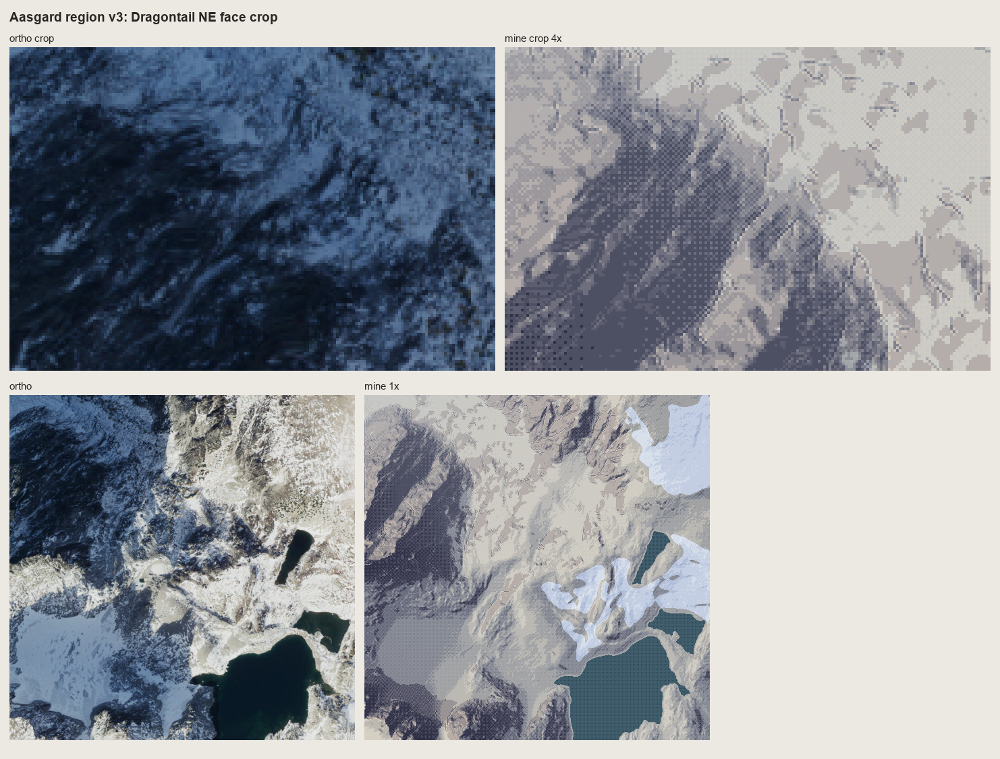
fig. Region v3, with a crop of the NE face at 4×. The face is dark and correct, but the gentle granite beside it is blotches. Tone alone doesn't draw rock at 1 m/px.
7. Rock on real lidar
rockdraw.draw is what the copies did, run on a rock mask of the lidar: fall-line streamlines at a constant pitch; long strokes on shaded faces; on lit faces a two-pixel tick under the upper edge, or nothing ("an extremely light distribution of fine hachures", p.262); gully lines from flow accumulation × concavity drawn first, each with a scraped lit strip; and no crest lines anywhere.
if tm > lit_cut: # the stroke's median tone
n = tick if rng.random() < 0.55 else 0 # lit face: a tick under the upper edge, or nothing
else:
n = len(px)
for i, p in enumerate(px[:n]):
t = tone[p]
ink[p] = max(ink[p], 2 if t < lit_cut else 1)
if t < heavy_at:
ink[p] = 3 # darkest faces: the dark ink, still 1 px wide
...
g, _ = K.gullies(z, cell, area_m2=gully_area, scale_m=4.0, conc=0.02, min_len_px=6)
g &= rock
strip = np.roll(np.roll(g, -lr, 0), -lc, 1) & ~g # the gully neighbour on the light side
ink[strip] = 5; ink[g] = 4
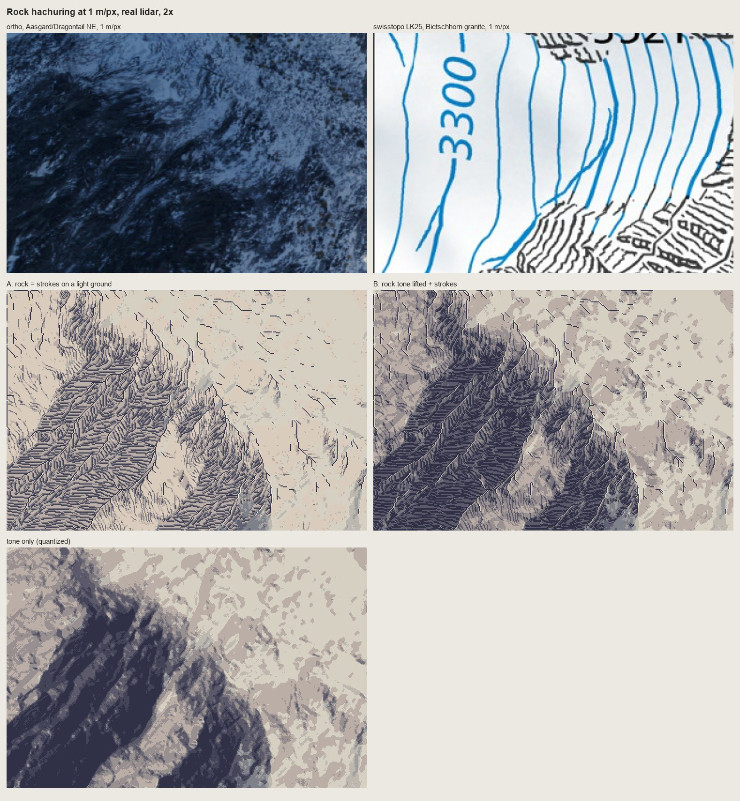
nb127. The first run at 1 m/px on Dragontail's NE face, beside the ortho and the swisstopo Bietschhorn. A: strokes on a light ground. B: strokes over the tone. A is the one that looks like the Swiss drawing: a field of feathered gullies. B is shading with texture on it.

nb128. With Lehmann's rows (a 1-px break each time a stroke crosses an 8 m row contour), as on the LK25.
8. A cold critic on the copies
After the first lidar runs I sent a fresh sub-agent the four copy sheets and that lidar test, with the brief to be blunt. Its ranking: 161 > 178-15 > lidar > 178-12 > 165. The sentence that applied to all of them:
Everything evenly spaced, the same width, axis-aligned; Imhof's economy is uneven, dense where the form turns, empty where it is lit.
Its specific charges, which I accepted: 178-12 reads as herringbone, because the strokes meet the gullies as barbs from below where the plate's arrive at an acute angle from above and fan with each buttress. 178-15's gullies are ruler-straight. In 161 the shadow flutes are a picket fence of equal bands, and the skyline's gendarmes have gone soft. In 165 the horizontal bedding, the subject, has become vertical pillars, and the gully trees read as posts.
I made one more pass on each:
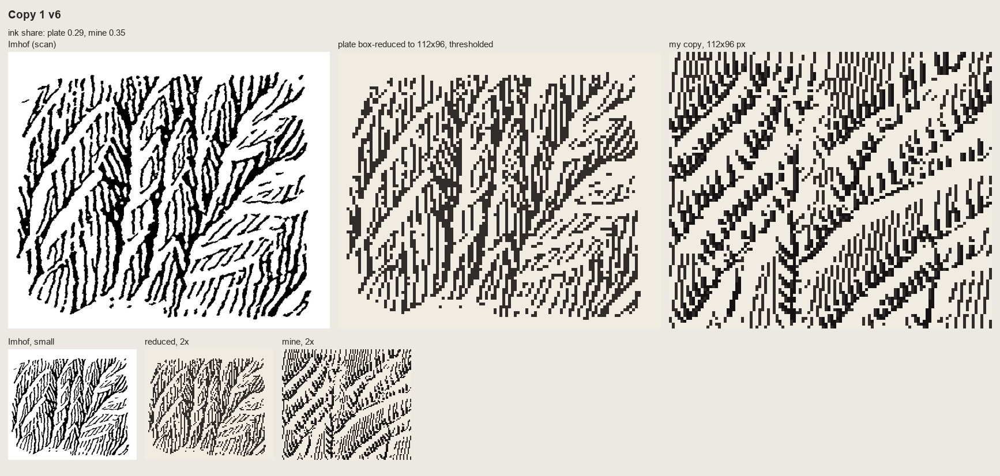
nb137. 178-12 after the critic: the surface tilted so the strokes lean like the plate's, and the dark gully floors kept only on their lower halves, so upward they dissolve into converging strokes. Better. Still herringbone. I haven't correctly read which way the scales face.

nb138. 178-15 v3: cuts deep enough that the form lines hook into every gully, and a 2-3 px shadow wedge instead of a line.

nb139. 165 round 5: ledge lines put back across the pillars, and the gully trunks turned into recesses. The vertical rhythm still wins. I kept drawing the joints I could see and lost the beds that are the structure. Imhof's caption says it: "banded, stepped slopes".
What the copies taught, that the text hadn't:
- In the Swiss style, rock is dark by the density of strokes on the shaded faces. The ground under the strokes is lighter than you'd expect.
- Pitch: 3 px is the finest that reads. At 2 px the strokes merge into tone.
- Only the skeleton is placed by hand. Everything else can follow from the surface it implies.
- A gully is a dark line plus one lit pixel beside it, never a dark line alone. That's 178-15 good against 178-17 poor.
- A pen drawing survives reduction only when translated into values.
- Uneven economy is the style.
9. The "=" bug
Meanwhile I'd zoomed into the lidar test myself. At 2× the shaded face looked like woven cloth. At 6× it was stacks of "=" bars:
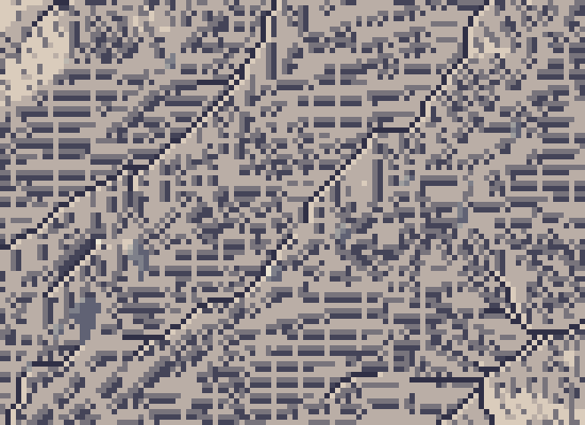
nb131. The shaded face at 6×: pairs of horizontal dashes stacked like equals signs. Imhof's Fig.178-7, "cloth weaving, but not of rock", reproduced by accident.
I suspected the stroke field and drew the raw streamlines alone, black on white:
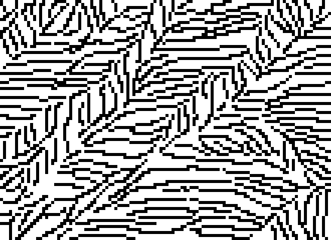
nb132. The streamlines by themselves are fine: evenly spaced, gathering into gullies. On this face they run nearly east-west in plan. I measured the mean downhill vector on the rock as (row −0.30, col +0.68).
That was the whole explanation. My "heavy" stroke added a second pixel on the side away from the light. With the light from the WNW, that side is below a near-horizontal stroke, so every heavy stroke became two stacked rows: an "=". I moved it to the stroke's normal, and that was no better at pitch 3, because the second pixel fills half the gap. Then I tried pitch 4 with heavy strokes only on the very darkest faces (nb133), and heavy strokes switched off entirely (nb134):
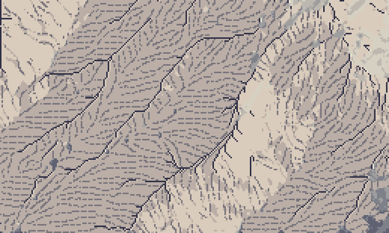

nb134, nb135. No heavy pixel at all (the shaded face goes limp and grey); then the final rule: pitch 4, every stroke 1 px wide, and the darkest faces take a darker ink instead of a wider stroke. Weight in pixels is carried by length and ink, not width. It reads as strokes gathered into gullies.
10. The places
place.paint_plan does the whole method on a place window: materials from the pack (canopy height → forest, water → water, slope → rock, ortho brightness → snow at the Enchantments), Imhof tone, rock drawing where a rock patch is big enough to carry three strokes across (Imhof's small-scale rule, p.272: otherwise it's a tone), forest carrying the same shading steps with lit crowns (p.332), a lit lip on each shore, haze by elevation. place.iso drapes the painted map on the lidar at 30° from the south, painting rows far to near and filling each column down to the previous row. run_places.py runs four 1024 m windows at 1 and 2 m/px.
One more harness lesson: run_places.py printed "done" per place, but piped to a log, Python block-buffers stdout, so the log stayed empty for twenty minutes while the sheets were quietly appearing on disk. Watch file mtimes, not print lines. The studio's notes warn about exactly this.
The Yakima Canyon came first and was the most instructive failure:
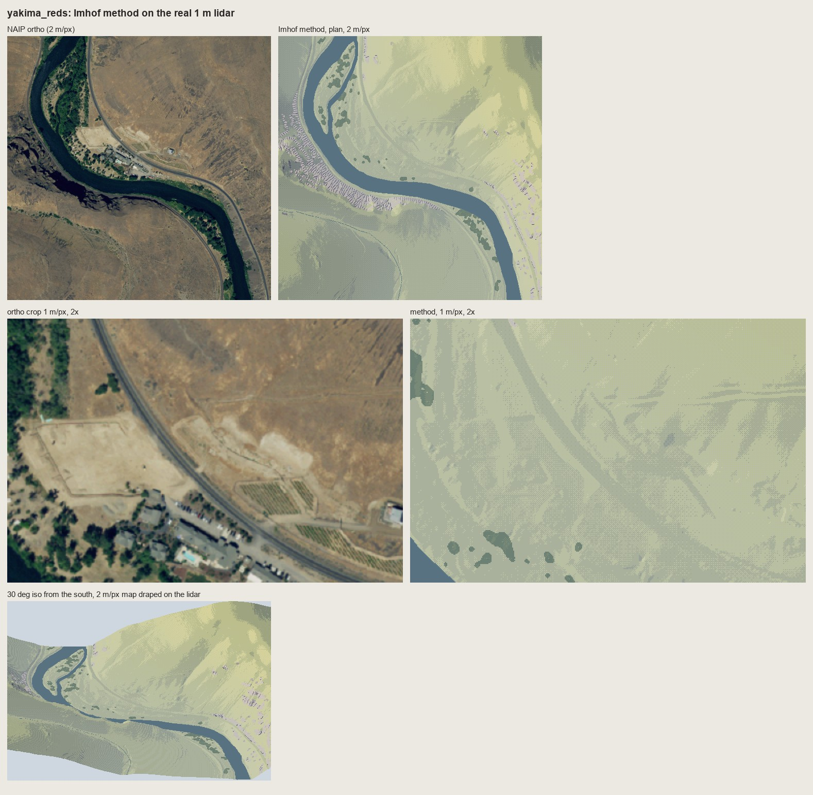
nb140. Yakima v1. A green meadow palette on semi-arid steppe, and the basalt rimrock on the left bank drawn with granite's fall-line strokes: a comb of pale ticks.
Two changes: a steppe ramp, and a bedded rock style (draw_bedded) that follows Fig.165. Each 9 m bed contour becomes a ledge, dark as an overhang shadow with a lit lip upslope, and short column strokes run between the ledges.

nb142. The rimrock at 1 m/px, 2×, with ledges. It reads as dark stepped rock up close. At 2 m/px and in iso it's too small to state the canyon's banding.
Mount Index exposed the next problem:

nb143. Mount Index with rock as "strokes on a light ground", the rule the copies taught. At 1 m/px the NE walls became corduroy on paper, and the mountain's great dark flank disappeared. Imhof's rock-hachure rule had beaten his large-form rule.


nb144, nb145. Over-corrected: strokes over the full-range tone. The flank is back, but dark strokes on dark ground are mud.
The answer is in the book, p.340: "shaded skeletal outlines or rock hachures with corresponding shading tones". The tone under the rock is compressed to about steps 2.5-5 of 7, and the strokes sit 2-3 steps below it:
s2[keep] = np.clip(np.round(4.2 + (st[keep] - 3.4) * 0.55), 0, 6).astype(st.dtype)
s2[keep & (ink == 1)] -= 1 # tick
s2[keep & (ink == 2)] = np.maximum(s2[keep & (ink == 2)] - 2, 0) # stroke
s2[keep & (ink == 3)] = np.maximum(s2[keep & (ink == 3)] - 3, 0) # darkest stroke
s2[keep & (ink == 4)] = 0 # gully floor
s2[keep & (ink == 5)] = np.minimum(s2[keep & (ink == 5)] + 1, 6) # scraped lit strip

nb146. Dragontail's NE face at 1 m/px, 2×, compressed. The flank stays one dark mass, and the strokes and gullies still read inside it. I found this by failing both ways.
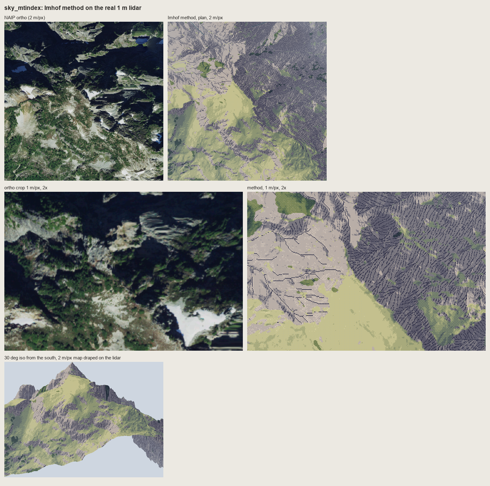
fig. Mount Index, final. The NE walls are one dark stroked mass; the SW slopes are lit meadow and rock; the iso gives a convincing peak with rock bands on its flanks. The meadow is one flat yellow-green, darker and more wooded in the ortho than in mine (the canopy layer finds only 4.5% trees there), and the snowfields and tarns are missing, because the snow mask existed only for the Enchantments.
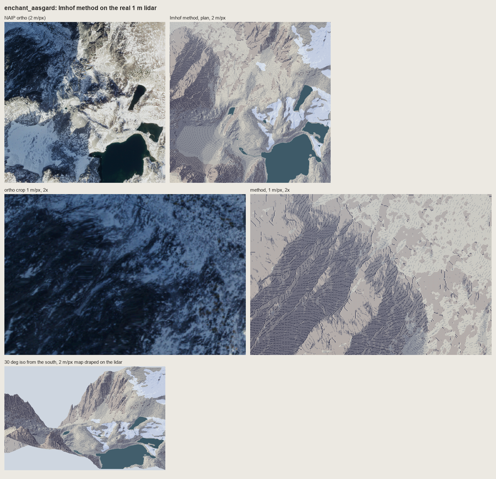
fig. The Enchantments, final: plan at 2 m/px, the face at 1 m/px, and the iso.
11. The second critic, and before | after

nb147. The lanes' current renders (left, their own framings) beside the method (right, 30° iso) for the Enchantments, Mount Index and the Yakima. The cameras differ, so this is a comparison of how rock, light and big forms are stated, nothing finer.
A second fresh critic read the four place sheets and this one. Its verdict, which I accept in full:
- Large forms and light: right, and better than the lanes for the Enchantments (the lane render has "no light direction and no forms") and Mount Index (the lane shows "a forest carpet and no mountain"). The Enchantments iso was its strongest frame.
- Rock: not yet drawn rock. "A slope-keyed hatch texture laid over a hillshade": even parallel strokes in bands, no hierarchy of length, weak convergence into gullies, and no light/shadow break at the crests. That last one is Imhof's crest rule: the crest isn't outlined, it's made by "the sharp change between adjacent light and shadow areas" (p.262). My tone at the crest is too soft for that change to exist.
- Yakima: the lane is better for the rock. Its plain dark bands say "rimrock canyon". My ledges are ladder stitches.
- The Index valley window is the weakest sheet: a posterized hillshade under a forest.
12. What I'd tell myself at the start
- Copy first, and copy longer. I read chapter 11 and could quote it; I only understood Fig.178 when I tried to put its strokes on a grid. Everything that works in my rock came from the copies. The copies that failed (178-12, 165) are exactly where my system fails too, and I moved on to the lidar before they were right.
- A damaged book can still be read closely. The text is exact, so use it as the instrument. Find where the master's plates live on now (for Imhof, the Swiss national maps) and fetch them.
- Flat ground is the middle step. That one rule is most of what makes Imhof's light work in pixels, and it's the one GIS hillshade gets wrong.
- Weight in pixels is length and ink, not width. A second pixel in a hachure at pitch 3-4 turns strokes into bars.
- Two of the master's rules can fight. "Rock is strokes on a light ground" and "large forms first" fought on Mount Index. His own combination (compressed shading under the strokes) was on p.340 the whole time.
- Uneven economy is the style. Two critics said it. Nothing I made yet has it.
Where it stops, honestly: the tone model is carried; the rock drawing isn't. Next, in order:
- Crests as a one-pixel light/shadow break.
- Stroke length and density varying with the form.
- The Yakima wall stated as three or four dark beds with lit ledges before any column stroke.
- Rock and snow masks from geology and the ortho, not slope alone.
- Copy 178-12 again until the scales face the right way.
The rules as they stand are in the tutorial.